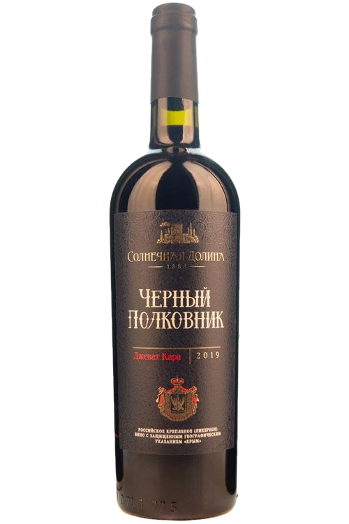
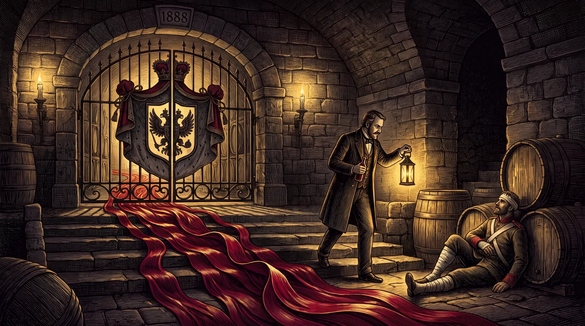

ЧЁРНЫЙ ПОЛКОВНИК · ОДЕССКИЙ ЧЁРНЫЙ · СОЛНЕЧНАЯ ДОЛИНА
Чёрный Полковник
Девяносто и девять десятых балла — выше в креплёных России сегодня нет никого.

Досье
Раздел I · Досье
Что в бутылке
Мощное, мягкое, полнотелое, достаточно терпкое и при этом свежее вино. Выпускается из винограда со старых лоз местных и других сортов. Виноград собирается вручную. Вино проходит длительную выдержку в дубовых бочках и бутах.
- Сортовой состав
- Одесский чёрный, бастардо магарачский, каберне совиньон, джеват кара, кефесия
- Спирт
- 17,5% об.
- Сахар
- 110 г/дм³
- Объём
- 0,75 л.
- Подача
- 16–18 °С
- Бокал
- Небольшой тюльпанообразный бокал для креплёных вин
Дегустационная нота
- Цвет
- Насыщенный тёмно-рубиновый с кирпичным оттенком, обусловленным длительной выдержкой в бочках
- Букет
- Сложный букет с тонами молочного ириса, шоколада, чернослива, пряностей. После непродолжительной аэрации вина в бокале на передний план выходят сливочно-кофейные тона, а также ванили и кожи
- Вкус
- Ощутимая терпкость вина создаётся аккуратными бархатистыми танинами. Вкус достаточно свежей кислотности с долгим теплым, приятным послевкусием
- Гастрономия
- Отличный дижестив. Попробуйте «Чёрный Полковник» с шоколадными и ореховыми десертами, с выдержанными сырами. Подойдёт к стейкам и мясу, приготовленному на гриле вместо или вместе с кисло-сладкими ягодными соусами
Раздел II · Легенда марки
90,9 балла — абсолютный лидер креплёных России
Второй чёрный из долины собран из пяти сортов: одесский чёрный, бастардо магарачский, каберне совиньон, джеват кара и кефесия. Виноград берут со старых лоз, собирают вручную, вино надолго уходит в дубовые бочки и буты — отсюда кирпичный оттенок по краю бокала, который дают только годы выдержки.
В «Винном гиде России — 2026» (Роскачество, 17 февраля 2026) «Чёрный Полковник» получил 90,9 балла и возглавил рейтинг креплёных вин страны. Рядом с ним, в 0,1 балла, стоит «Чёрный Доктор» — вина одной долины и одних подвалов.
Впервые за шесть лет сразу два креплёных вина превысили порог в 90 баллов.Роскачество · «Винный гид России — 2026», 17.02.2026

Раздел III · Архив выпусков
Годы, которые дом сохранил
Все релизы марки, которые дом показывает в каталоге сегодня — 4.
- Базовый 0,75 л. 17,5% об. · 110 г/дм³ Эта карточка
- 1996 Коллекция · 0,75 л. 17,5% об. · 110 г/дм³ Открыть карточку
- 2013 Хеопс · 0,75 л. 17,5% об. · 110 г/дм³ Открыть карточку
- 2019 Сувенирный · 1,5 л. 17,5% об. · 110 г/дм³ Открыть карточку
Раздел IV · Визит
Легенду наливают в подвале.
Экскурсия по трём голицынским подвалам и дегустация 10 марок вин — 1 час 20 минут, от 1 450 ₽ за гостя. Начало в 10:00, 11:00, 13:00, 14:00, 15:00, 16:00 ежедневно; в 20:00 — дегустация при свечах по предварительной заявке.
с 10:00 до 17:00 без выходных · с. Миндальное, ул. Миндальная, 8А, дегустационный зал «Архадерессе»